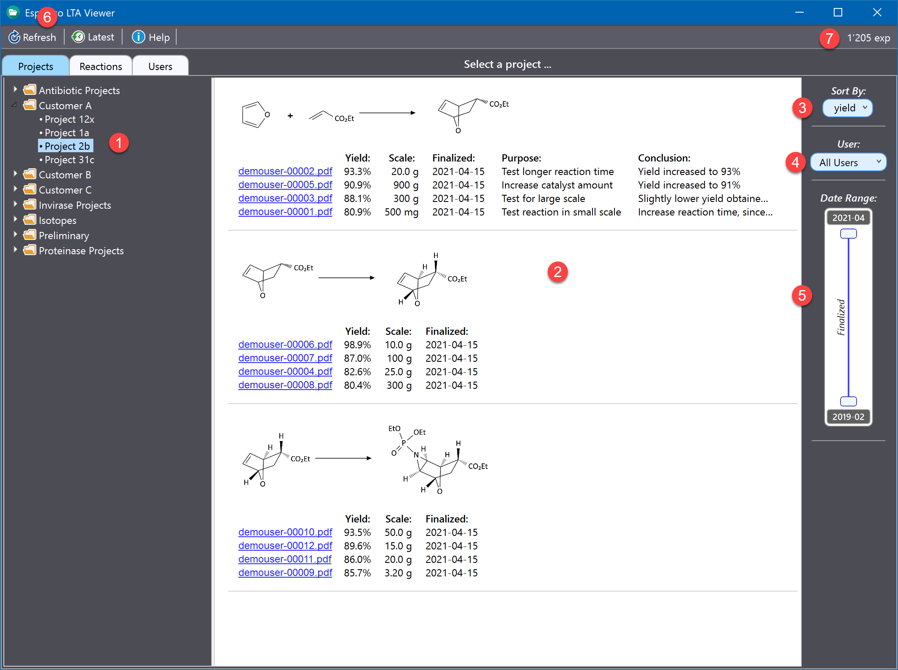
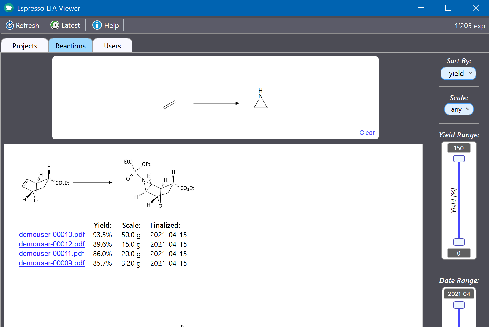
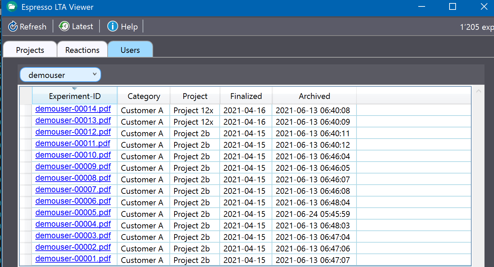
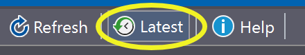
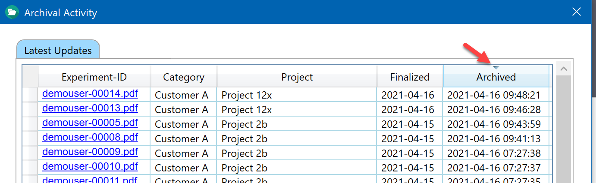

Espresso LTA Viewer
Introduction
Espresso LTA Viewer is a freely available tool for viewing, browsing and searching all experiment PDF documents stored in the Espresso ELN long term archive. It can be downloaded here.
Projects Section
After opening the viewer, the Browse tab appears. It organizes all archived experiments by project category and project (1). The projects contain experiments of multiple users in case of identical identical project category and project title pairs. If users modify category and/or project titles later on in their ELN, these changes are also are updated in the LTA and in the viewer.
Project experiments are grouped by identical chemical conversion (2), the lists can be sorted by yield, scale, finalization date or experiment-ID (3). Clicking the PDF experiment links opens the experiment PDF documents in the current default PDF default viewer. If the purpose and conclusion fields were utilized in the ELN, their contents are displayed in the experiment details (hovering the mouse over cut off entries displays a tool tip containing the complete content).

The results can be filtered by user (4), which also updates the available project categories and and projects (1) accordingly. Similarly, the range of experiment finalization dates can be filtered using the Date Range slider (5) by upper and lower date.
The displayed data are a snapshot at the time the viewer was opened. If the archive is continuously updated, the refresh button (6) updates all data to the current point in time. This also applies to the 'Reaction' and the 'Users' tabs. The experiment counter (7) displays the total number of experiments currently archived in the LTA database.
Reactions Section
Archived experiments can be searched by specific conversions by conducting reaction substructure searches (RSS). A reaction substructure is a reaction sketch which only contains the reaction centers of reactant and product which actually change during a specific conversion (see example below). Substituents around the reaction center(s) can be added for restricting the search to more specific structures. Please note, however, that you will get less results the more detailed the the substituents are specified. To draw or edit a reaction substructure, right-click inside the empty area labeled "Click to edit reaction substructure ...", which will open the integrated chemical drawing editor ChemBytes Draw. After closing the editor the query results are displayed.
In the example below, the general (no substituents specified) conversion of a double bond to an aziridine is queried by the RSS sketch shown in the screen shot below. Similarly, the reduction of any ketone to a secondary alcohol could be queried by drawing the conversion of acetone to isopropanol as the reaction substructure. There's no need to specify reaction centers and other parameters, as in other applications.

The results can be filtered by yield range, date range and scale. The scale filter can be set to mg, g and kg scale. Milligram scale means a scale of less than 1g, gram scale means a scale between 1g and less than 1 kg, and kilogram scale means a scale of 1 kg or more. This conveniently allows to distinguish between e.g. preliminary experiments and large scale production runs.
Users Section
This section lists all archived experiments of a specific user, which also allows to locate a specific experiment easily. Use the user dropdown menu on top of the table to select the desired user. Clicking an experiment-ID link in the table opens the corresponding PDF document.

Latest Updates Info
While the LTA archive is continuously updated with newly finalized (or re-finalized) experiments, it is often of interest to monitor this activity, e.g. for ensuring that everything works normally. Click the 'Latest' button in the main toolbar to access this functionality:

This opens the table below. By default, its contents are sorted by archival date, but can be sorted by any other category by clicking the desired column header. Clicking a column header multiple times toggles between ascending and descending sort order. Clicking a PDF experiment link opens the experiment PDF document in the current default PDF default viewer.

Important: Please note that only finalized experiments are archived.